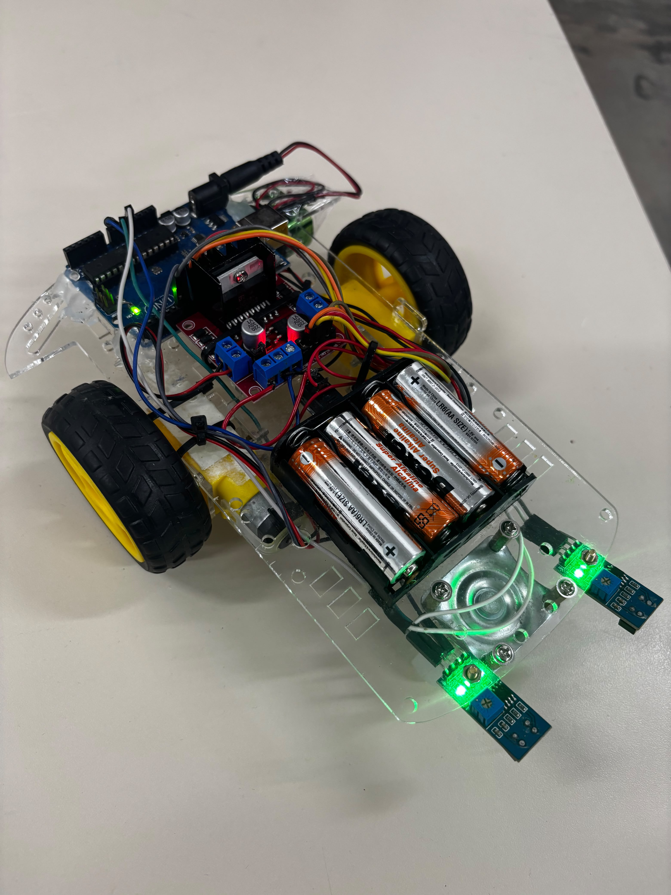
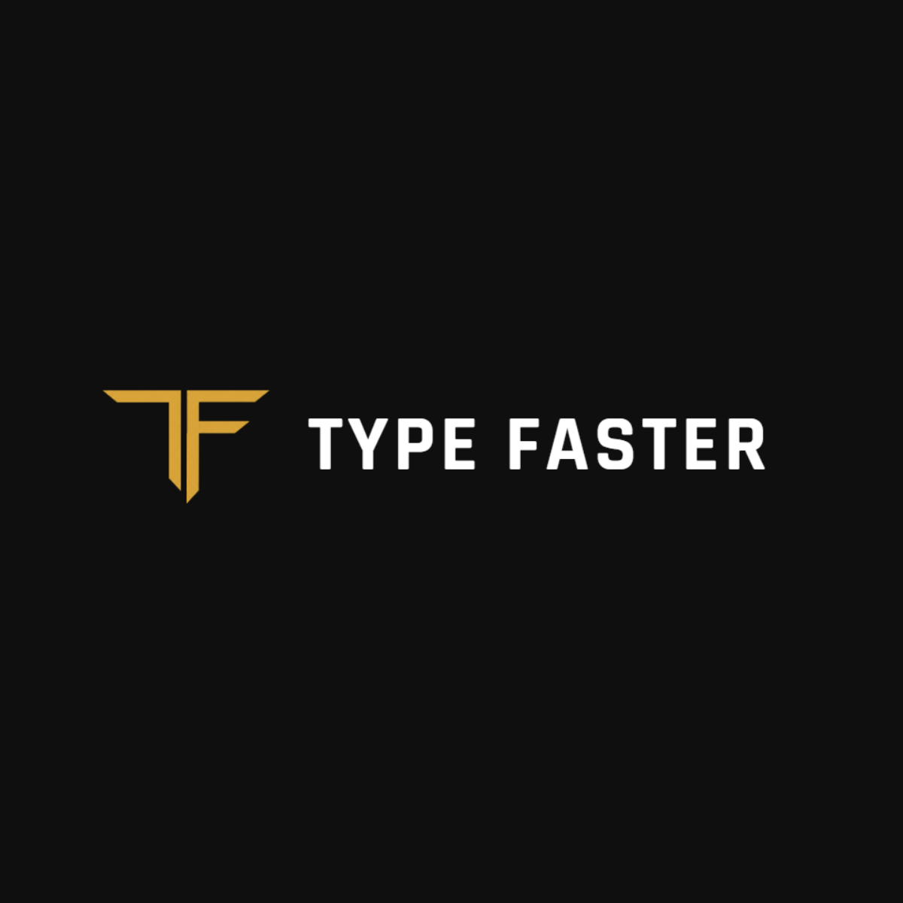
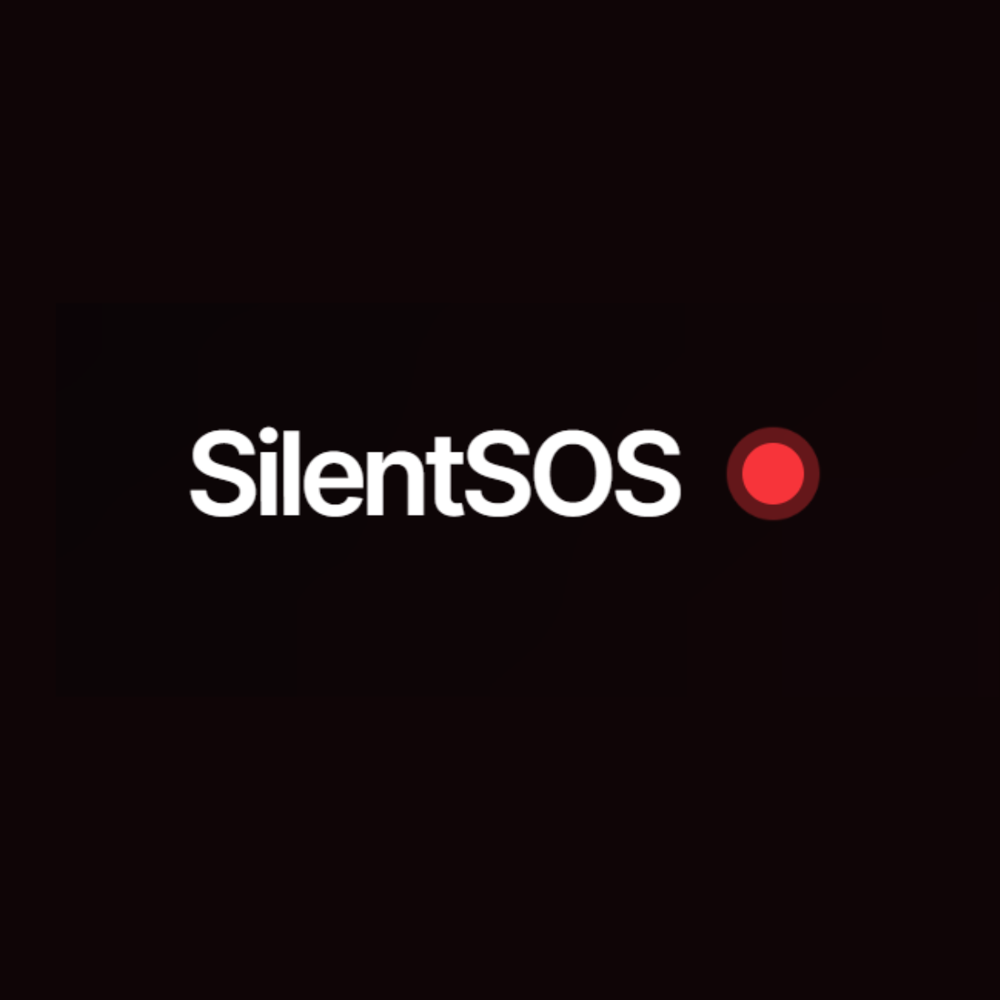
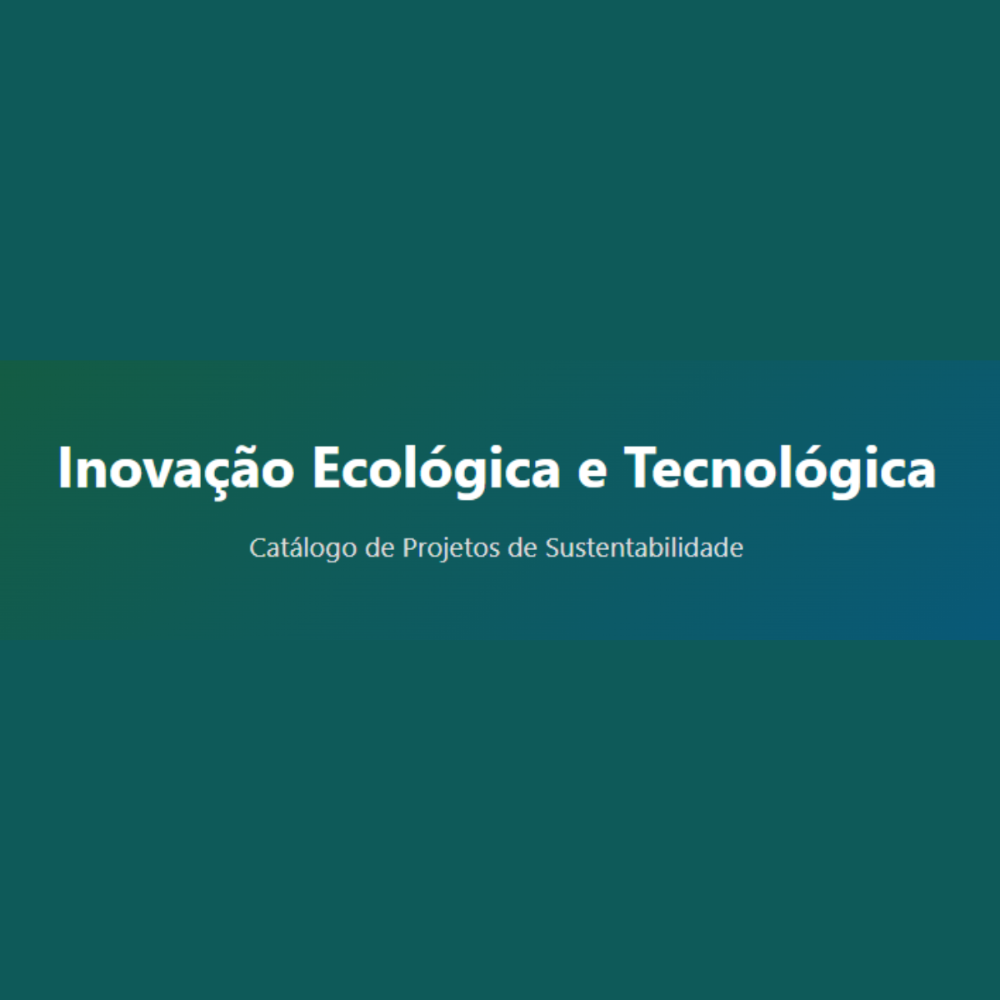

FETEC 2026
Inovação e Tecnologia
Bem-vindo ao portal tecnológico oficial! Explore os trabalhos desenvolvidos pelos alunos do Curso Técnico em Informática para Internet e Desenvolvimento de Sistemas integrado ao ensino médio da ETEC Darcy Pereira de Moraes. Acesse diretamente os portfólios reais, experimente as aplicações e confira todo o empenho das equipes de desenvolvimento.

Assista ao Vídeo do Nosso Evento
🎓 Vestibulinho Etec Darcy Pereira de Moraes
Estão abertas as inscrições para os cursos Técnicos de Tecnologia Integrados ao Ensino Médio:
💻 Informática para Internet – período da tarde
🖥️ Desenvolvimento de Sistemas – período da noite
Uma oportunidade para cursar o Ensino Médio aliando a formação técnica à preparação para o mercado de trabalho na área de Tecnologia da Informação.
📌 Inscrições:
https://vestibulinho.etec.sp.gov.br/home/
📍 Etec Darcy Pereira de Moraes – Itapetininga/SP
Portfólios & Aplicações
Explore os designs e soluções dinâmicas de front-end criadas do zero pelos alunos da ETEC. Filtre pelos módulos de ensino abaixo e acesse os links oficiais das páginas!
 1º MÓDULO
1º MÓDULO
Qual é a Música?
Projeto interativo que desafia os participantes a identificarem músicas.
 1º MÓDULO
1º MÓDULO
Scratch
Jogos diversos desenvolvidos no Scratch
 1º MÓDULO
1º MÓDULO
Hilo Cards
Jogo de cartas estratégico (solo ou multiplayer) com decks de 20 cartas. Cada carta tem efeito e custo de energia. Jogadores começam com 40 pontos de vida e vencem ao zerar a do oponente..
Teste de Temperamento
Uma ferramenta para descobrir o temperamento pessoal com base em respostas simples.
 1º MÓDULO
1º MÓDULO
Teste Vocacional
Descubra sua área de atuação com base em suas preferências.

1º MÓDULOGaleria de Robótica
Fotos dos nossos projetos de robótica com programação e construção de protótipos.

1º MÓDULOType Faster
Projeto focado no desenvolvimento e aprimoramento da agilidade em digitação por meio de práticas interativas.

1º MÓDULOSilent SOS
Sistema de alerta e segurança discreto desenvolvido para envio rápido de pedidos de ajuda em situações de emergência.
.png) 1º MÓDULO
1º MÓDULO
Pytec
Plataforma com jogos desenvolvidos em Python, combinando diversão e lógica de programação.

1º MÓDULOSustentabilidade
Projeto focado em conscientização e práticas ecológicas sustentáveis.
Jogos de JS
Coleção de jogos interativos e divertidos em JavaScript.
Recruta Hacker
Jogo interativo onde você participa de uma operação hacker.